Posterior Diagnostics Tutorial
This notebook walks through all the classes and functions in psiphy.plotting.diagnostics, using the built-in toy models to generate realistic posteriors.
What is covered
Class / function |
Description |
|---|---|
|
Posterior from MCMC / IS weighted samples |
|
Posterior on a regular N-D grid |
|
Side-by-side comparison: boxplot, forest, metrics table |
|
Corner / triangle plot (multi-backend) |
|
Weighted mean, std, and credible intervals |
Diagnostic metrics available on every distribution
Method |
What it measures |
|---|---|
|
Equal-tailed marginal CIs from the empirical CDF |
|
Per-parameter |
|
Per-parameter |
|
Probability Integral Transform — |
|
Multivariate distance from posterior mean to truth |
|
Per-parameter KL divergence between two posteriors |
[1]:
import numpy as np
import matplotlib.pyplot as plt
from psiphy.mcmc import (
UniformPrior,
importance_sampling,
sequential_monte_carlo,
)
from psiphy.toy_models import GaussianSignal, NoisyLine
from psiphy.plotting.diagnostics import (
SampledDistribution,
GriddedProbabilities,
PosteriorComparison,
plot_triangle,
print_chain_stats,
)
np.random.seed(42)
1 Generate posteriors from toy models
We use GaussianSignal (2 parameters: mean \(\mu\), std \(\sigma\)) and NoisyLine (2 parameters: slope \(m\), intercept \(b\)) as test beds. Posteriors are approximated with IS (tight proposal) and SMC (broad prior).
[2]:
# ── GaussianSignal setup ──────────────────────────────────────────────────────
gs = GaussianSignal(N=60)
theta_true_gs = np.array([1.5, 0.8]) # [mean, sigma]
x_obs = gs.simulate(theta_true_gs)
prior_gs = UniformPrior([(0.0, 3.0), (0.2, 2.0)])
log_post_gs = lambda t: gs.log_prob(t, x_obs) + prior_gs.log_prob(t)
# IS posterior (tight proposal → good ESS)
prop_is = prior_gs.sample(8000)
res = importance_sampling(log_post_gs, prop_is)
s_is, w_is = res['samples'], res['weights']
# SMC posterior (broad prior)
prior_broad = UniformPrior([(-2, 5), (0.1, 4)])
res = sequential_monte_carlo(
lambda t: gs.log_prob(t, x_obs),
prior_broad,
n_particles=2000,
n_steps=12,
verbose=False,
)
s_smc, w_smc = res['samples'], res['weights']
print(f'IS particles={len(s_is)}, true={theta_true_gs}')
print(f'SMC particles={len(s_smc)}, true={theta_true_gs}')
IS particles=8000, true=[1.5 0.8]
SMC particles=2000, true=[1.5 0.8]
[3]:
# ── NoisyLine setup ───────────────────────────────────────────────────────────
nl = NoisyLine(Nx=50, noise_sigma=0.4)
theta_true_nl = np.array([-0.8, 5.0]) # [slope, intercept]
y_obs = nl.simulate(theta_true_nl)
prior_nl = UniformPrior([(-3.0, 3.0), (2.0, 8.0)])
log_post_nl = lambda t: nl.log_prob(t, y_obs) + prior_nl.log_prob(t)
prop_nl = prior_nl.sample(8000)
res = importance_sampling(log_post_nl, prop_nl)
s_nl, w_nl = res['samples'], res['weights']
print(f'NoisyLine IS true={theta_true_nl}')
NoisyLine IS true=[-0.8 5. ]
2 SampledDistribution
SampledDistribution wraps weighted samples (e.g. from IS or MCMC) and provides all diagnostic metrics through a common interface.
[4]:
dist_is = SampledDistribution(
s_is,
weights=w_is,
true_values=theta_true_gs,
labels=[r'\mu', r'\sigma'],
)
dist_smc = SampledDistribution(
s_smc,
weights=w_smc,
true_values=theta_true_gs,
labels=[r'\mu', r'\sigma'],
)
print('n_params:', dist_is.n_params)
n_params: 2
2a print_stats — mean, std, and credible intervals
[5]:
print('── IS posterior ──────────────────────────────')
dist_is.print_stats(levels=(68, 95))
print()
print('── SMC posterior ─────────────────────────────')
dist_smc.print_stats(levels=(68, 95))
── IS posterior ──────────────────────────────
Parameter summary
==================================================
\mu: mean = 1.3756, std = 0.0967
68% CI: [1.2738, 1.4780]
95% CI: [1.1927, 1.5487]
\sigma: mean = 0.7522, std = 0.0660
68% CI: [0.6928, 0.8176]
95% CI: [0.6297, 0.8968]
── SMC posterior ─────────────────────────────
Parameter summary
==================================================
\mu: mean = 1.3680, std = 0.0900
68% CI: [1.2955, 1.4297]
95% CI: [1.1958, 1.5856]
\sigma: mean = 0.7392, std = 0.0758
68% CI: [0.6781, 0.8302]
95% CI: [0.6253, 0.8969]
2b Scalar metrics
[6]:
print('IS posterior metrics')
print(' z-scores :', np.round(dist_is.z_scores(), 3))
print(' bias :', np.round(dist_is.bias(), 3))
print(' PIT :', np.round(dist_is.pit(), 3))
print(' Mahalanobis D :', round(dist_is.mahalanobis(), 3))
print()
print('SMC posterior metrics')
print(' z-scores :', np.round(dist_smc.z_scores(), 3))
print(' bias :', np.round(dist_smc.bias(), 3))
print(' PIT :', np.round(dist_smc.pit(), 3))
print(' Mahalanobis D :', round(dist_smc.mahalanobis(), 3))
IS posterior metrics
z-scores : [1.286 0.723]
bias : [-0.123 -0.054]
PIT : [0.908 0.789]
Mahalanobis D : 1.42
SMC posterior metrics
z-scores : [1.466 0.802]
bias : [-0.138 -0.071]
PIT : [0.926 0.713]
Mahalanobis D : 1.748
2c KL divergence between IS and SMC posteriors
[7]:
kl = dist_is.kl_divergence(dist_smc)
labels = [r'$\mu$', r'$\sigma$']
for lbl, k in zip(labels, kl):
print(f' KL(IS || SMC) {lbl} = {k:.4f}')
KL(IS || SMC) $\mu$ = 0.1040
KL(IS || SMC) $\sigma$ = 0.3703
3 GriddedProbabilities
GriddedProbabilities holds a posterior evaluated on a regular parameter grid. Credible intervals are computed directly from 1-D marginals — efficient for large grids.
The optional true_ranges parameter enables score(), which measures how much posterior mass falls inside a rectangular truth region (useful for challenge-style scoring).
[8]:
# Build a 2-D log-posterior grid for GaussianSignal
n_grid = 80
mu_grid = np.linspace(0.5, 2.5, n_grid)
sig_grid = np.linspace(0.3, 1.5, n_grid)
MU, SIG = np.meshgrid(mu_grid, sig_grid, indexing='ij')
log_grid = np.vectorize(
lambda mu, sig: gs.log_prob(np.array([mu, sig]), x_obs) + prior_gs.log_prob(np.array([mu, sig]))
)(MU, SIG)
prob_grid = np.exp(log_grid - log_grid.max()) # normalise for numerical stability
dist_grid = GriddedProbabilities(
prob_grid,
coords=[mu_grid, sig_grid],
true_values=theta_true_gs,
labels=[r'\mu', r'\sigma'],
true_ranges=[[1.2, 1.8], [0.6, 1.0]], # illustrative truth cube
)
print('Grid shape:', prob_grid.shape)
print('n_params :', dist_grid.n_params)
Grid shape: (80, 80)
n_params : 2
[9]:
print('Grid posterior metrics')
print(' z-scores :', np.round(dist_grid.z_scores(), 3))
print(' bias :', np.round(dist_grid.bias(), 3))
print(' PIT :', np.round(dist_grid.pit(), 3))
print(' Mahalanobis D :', round(dist_grid.mahalanobis(), 3))
print(' score :', round(dist_grid.score(), 4))
Grid posterior metrics
z-scores : [1.282 0.813]
bias : [-0.136 -0.07 ]
PIT : [0.921 0.828]
Mahalanobis D : 1.517
score : 0.9613
[10]:
# Visualise the 2-D grid with marginals
fig, axes = plt.subplots(1, 3, figsize=(13, 4))
# 2-D posterior
im = axes[0].pcolormesh(mu_grid, sig_grid, prob_grid.T / prob_grid.max(),
cmap='Blues')
axes[0].scatter(*theta_true_gs, c='red', s=80, zorder=5, label='truth')
rect = plt.Rectangle((1.2, 0.6), 0.6, 0.4, fill=False, edgecolor='gray',
linestyle='--', lw=1.5, label='true_ranges')
axes[0].add_patch(rect)
axes[0].set(xlabel=r'$\mu$', ylabel=r'$\sigma$', title='2-D grid posterior')
axes[0].legend()
plt.colorbar(im, ax=axes[0])
# Marginal mu
marg_mu = prob_grid.sum(axis=1)
axes[1].plot(mu_grid, marg_mu / marg_mu.max())
axes[1].axvline(theta_true_gs[0], c='red', ls='--', label='truth')
ci_mu = dist_grid.credible_intervals()[0]
axes[1].axvspan(ci_mu['lo68'], ci_mu['hi68'], alpha=0.15, label='68% CI')
axes[1].axvspan(ci_mu['lo95'], ci_mu['hi95'], alpha=0.07, label='95% CI')
axes[1].set(xlabel=r'$\mu$', title=r'Marginal $\mu$')
axes[1].legend(fontsize=8)
# Marginal sigma
marg_sig = prob_grid.sum(axis=0)
axes[2].plot(sig_grid, marg_sig / marg_sig.max())
axes[2].axvline(theta_true_gs[1], c='red', ls='--', label='truth')
ci_sig = dist_grid.credible_intervals()[1]
axes[2].axvspan(ci_sig['lo68'], ci_sig['hi68'], alpha=0.15, label='68% CI')
axes[2].axvspan(ci_sig['lo95'], ci_sig['hi95'], alpha=0.07, label='95% CI')
axes[2].set(xlabel=r'$\sigma$', title=r'Marginal $\sigma$')
axes[2].legend(fontsize=8)
fig.suptitle('GriddedProbabilities — GaussianSignal posterior', y=1.02)
plt.tight_layout()
plt.show()
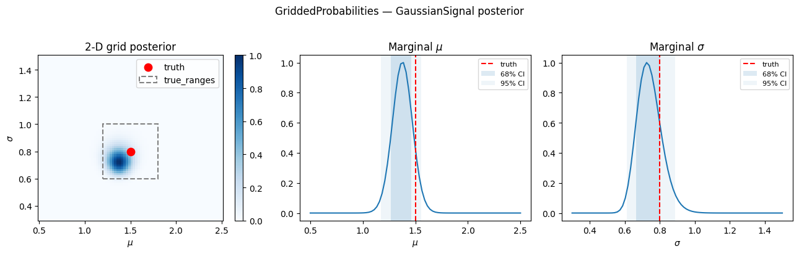
4 PosteriorComparison — side-by-side diagnostics
PosteriorComparison accepts any mix of SampledDistribution and GriddedProbabilities objects and produces aligned comparison plots.
We compare three posteriors for the same GaussianSignal experiment:
IS — importance sampling with tight proposal
SMC — sequential Monte Carlo from a broad prior
Grid — full 2-D grid posterior evaluated analytically
[11]:
# marker=True (default) → auto-assigns from the marker cycle
# color=None → auto-assigns from tab20 colour cycle
comp = PosteriorComparison()
comp.add(dist_is, label='IS', color='C0')
comp.add(dist_smc, label='SMC', color='C2')
comp.add(dist_grid, label='Grid', color='C3')
4a Boxplot — box = 68% CI, whiskers = 95% CI, marker = median
marker=True (default) auto-assigns a symbol from the cycle. Pass marker=None to suppress it.
[12]:
fig = comp.plot_boxplot(levels=(68, 95))
plt.suptitle('Boxplot — auto markers from cycle (default)', y=1.02)
plt.show()
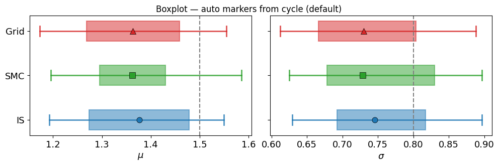
4b Forest plot — errorbar style
[13]:
fig = comp.plot_forest(levels=(68, 95))
plt.suptitle('Forest plot — auto markers from cycle (default)', y=1.02)
plt.show()
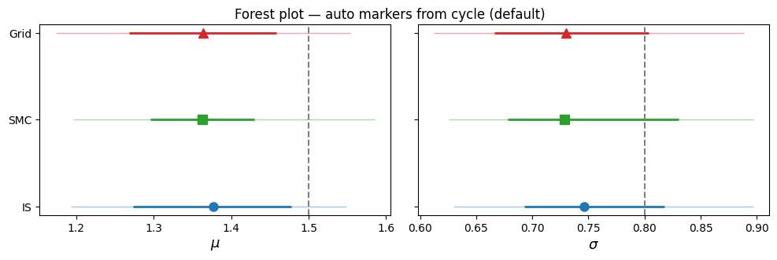
4c Per-entry styling: marker, markersize, linewidth
|
Effect |
|---|---|
|
Auto-assign from marker cycle |
|
No marker drawn (matplotlib convention) |
|
Use that specific symbol |
markersize and linewidth per entry override the method-level defaults.
[14]:
comp_styled = PosteriorComparison()
comp_styled.add(dist_is, label='IS (auto marker)', color='C0') # marker=True → cycle
comp_styled.add(dist_smc, label='SMC (square, lw3)', color='C2', marker='s', linewidth=3) # explicit marker
comp_styled.add(dist_grid, label='Grid (no marker)', color='C3', marker=None) # suppress marker
fig = comp_styled.plot_boxplot(levels=(68, 95))
plt.suptitle('Boxplot — auto / explicit / no marker', y=1.02)
plt.show()
fig = comp_styled.plot_forest(levels=(68, 95))
plt.suptitle('Forest plot — auto / explicit / no marker', y=1.02)
plt.show()
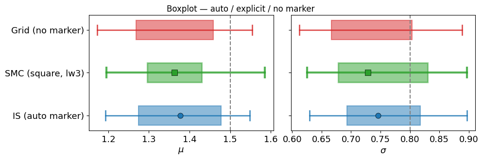
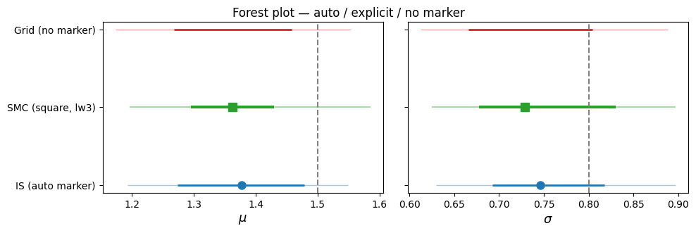
4d Legend panel
Entries with marker=None appear as a solid coloured line; others show their marker symbol.
[15]:
fig = comp_styled.legend(ncol=3)
plt.show()
4e Metrics table
[16]:
df = comp.metrics_table(sort_by='mahalanobis')
print(df.to_string(index=False))
label mahalanobis z_1 z_2 score
IS 1.420 1.286 0.723 NaN
Grid 1.517 1.282 0.813 0.9613
SMC 1.748 1.466 0.802 NaN
4f Auto-colored legend (when no markers are set)
[17]:
fig = comp.legend(ncol=3)
plt.show()
5 Comparing many posteriors — NoisyLine with varying noise
A more realistic use-case: the same line observed with five different noise levels, each analysed with importance sampling. The boxplot should show the posterior widening as the noise grows. (At the lowest noise levels the posterior is so narrow that IS from the broad prior has a very small effective sample size — SMC is the better tool there.)
[18]:
comp_nl = PosteriorComparison()
noise_levels = [0.2, 0.4, 0.8, 1.5, 3.0]
for noise in noise_levels:
nl_var = NoisyLine(Nx=50, noise_sigma=noise)
y_var = nl_var.simulate(theta_true_nl)
prior_var = UniformPrior([(-3, 3), (2, 8)])
prop_var = prior_var.sample(6000)
res = importance_sampling(
lambda t, _nl=nl_var, _y=y_var, _p=prior_var: _nl.log_prob(t, _y) + _p.log_prob(t),
prop_var,
)
s_var, w_var = res['samples'], res['weights']
d = SampledDistribution(
s_var, weights=w_var,
true_values=theta_true_nl,
labels=[r'm', r'b'],
)
comp_nl.add(d, label=f'noise={noise}')
fig = comp_nl.plot_boxplot()
plt.suptitle('NoisyLine: posterior width grows with noise level', y=1.02)
plt.show()
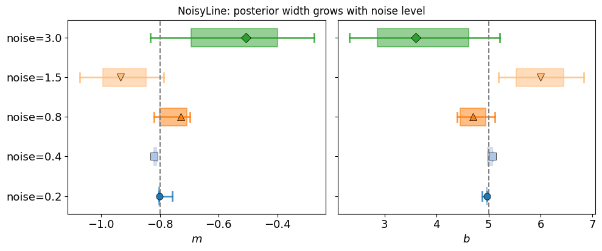
[19]:
print(comp_nl.metrics_table().to_string(index=False))
label mahalanobis z_1 z_2
noise=0.8 1.239 1.239 1.150
noise=0.2 1.509 0.080 0.490
noise=3.0 1.820 1.818 1.603
noise=1.5 2.509 1.703 2.395
noise=0.4 3.655 1.799 0.594
6 plot_triangle — corner / triangle plot
plot_triangle is a standalone function that accepts raw samples and forwards to the chosen backend ('corner', 'getdist', 'chainconsumer'). It is also accessible directly from any DistributionDiagnostic via .plot_triangle().
[20]:
# Standalone function — corner backend
try:
fig = plot_triangle(
s_is,
weights=w_is,
labels=[r'\mu', r'\sigma'],
true_values=theta_true_gs,
engine='corner',
bins=35,
plot_datapoints=False,
fill_contours=True,
levels=(0.68, 0.95),
color='C0',
)
plt.suptitle('plot_triangle (corner engine) — IS posterior', y=1.02)
plt.show()
except ImportError:
print('corner not installed — skipping')
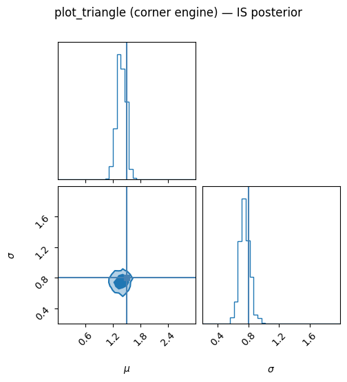
[21]:
# Via the object method — same result
try:
fig = dist_smc.plot_triangle(
engine='corner',
bins=35,
plot_datapoints=False,
fill_contours=True,
levels=(0.68, 0.95),
color='C2',
)
plt.suptitle('SampledDistribution.plot_triangle — SMC posterior', y=1.02)
plt.show()
except ImportError:
print('corner not installed — skipping')
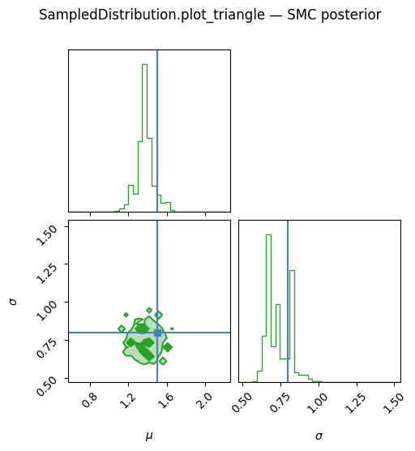
[22]:
# getdist backend
try:
g = plot_triangle(
s_is,
weights=w_is,
labels=[r'\mu', r'\sigma'],
true_values=theta_true_gs,
engine='getdist',
)
plt.suptitle('plot_triangle (getdist engine) — IS posterior', y=1.02)
plt.show()
except ImportError:
print('getdist not installed — skipping')
WARNING:root:outlier fraction 0.02265475430759413
Removed no burn in
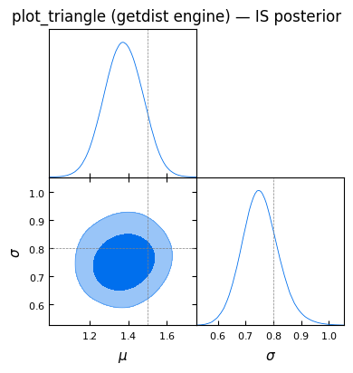
7 print_chain_stats — standalone summary
print_chain_stats can be called with raw samples (it computes everything internally) or with precomputed means, sigmas, and CIs.
[23]:
# From raw weighted samples
print('── From samples ─────────────────────────────')
print_chain_stats(s_is, weights=w_is, labels=[r'\mu', r'\sigma'], levels=(68, 95))
── From samples ─────────────────────────────
Parameter summary
==================================================
\mu: mean = 1.3756, std = 0.0963
68% CI: [1.2738, 1.4780]
95% CI: [1.1927, 1.5487]
\sigma: mean = 0.7522, std = 0.0658
68% CI: [0.6928, 0.8176]
95% CI: [0.6297, 0.8968]
[24]:
# From precomputed statistics
means_gs, _, sigmas_gs, *_ = dist_is._weighted_stats()
cis_gs = dist_is.credible_intervals(levels=(68, 95))
print('── From precomputed means / sigmas / CIs ────')
print_chain_stats(means_gs, sigmas=sigmas_gs, cis=cis_gs,
labels=[r'\mu', r'\sigma'], levels=(68, 95))
── From precomputed means / sigmas / CIs ────
Parameter summary
==================================================
\mu: mean = 1.3756, std = 0.0967
68% CI: [1.2738, 1.4780]
95% CI: [1.1927, 1.5487]
\sigma: mean = 0.7522, std = 0.0660
68% CI: [0.6928, 0.8176]
95% CI: [0.6297, 0.8968]
8 score() on GriddedProbabilities
The score() method integrates posterior mass inside a rectangular parameter region defined by true_ranges. It is used e.g. in the SDC3b challenge to rank inference methods.
Here we vary the size of the truth cube and observe how the score changes.
[25]:
half_widths = [0.05, 0.1, 0.2, 0.4, 0.6]
scores = []
for hw in half_widths:
d = GriddedProbabilities(
prob_grid,
coords=[mu_grid, sig_grid],
true_values=theta_true_gs,
true_ranges=[
[theta_true_gs[0] - hw, theta_true_gs[0] + hw],
[theta_true_gs[1] - hw, theta_true_gs[1] + hw],
],
)
scores.append(d.score())
print(f' half_width={hw:.2f} score={d.score():.4f}')
fig, ax = plt.subplots(figsize=(6, 3.5))
ax.plot(half_widths, scores, 'o-', c='steelblue')
ax.set(xlabel='Truth-cube half-width', ylabel='Score',
title='GriddedProbabilities.score() vs truth-cube size')
ax.axhline(1.0, ls='--', c='k', lw=0.8, label='perfect (score=1)')
ax.legend()
plt.tight_layout()
plt.show()
half_width=0.05 score=0.0718
half_width=0.10 score=0.2701
half_width=0.20 score=0.7891
half_width=0.40 score=0.9979
half_width=0.60 score=1.0000
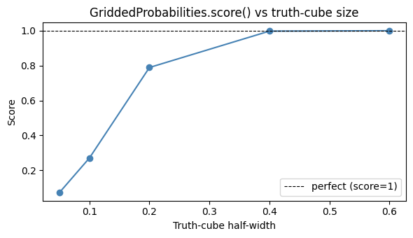
9 Mixing SampledDistribution and GriddedProbabilities in one comparison
PosteriorComparison works with any DistributionDiagnostic subclass, so you can put grid-based and sample-based posteriors side by side directly.
[26]:
comp_mixed = PosteriorComparison()
comp_mixed.add(dist_is, label='IS samples', color='C0', marker='o', markersize=9)
comp_mixed.add(dist_smc, label='SMC samples', color='C2', marker='s', markersize=9)
comp_mixed.add(dist_grid, label='Grid', color='C3', marker='^', markersize=9)
fig = comp_mixed.plot_boxplot(levels=(68, 95), figsize=(9, 3.5))
plt.suptitle('Mixed posteriors: samples vs grid — GaussianSignal', y=1.02)
plt.show()
print()
print(comp_mixed.metrics_table().to_string(index=False))
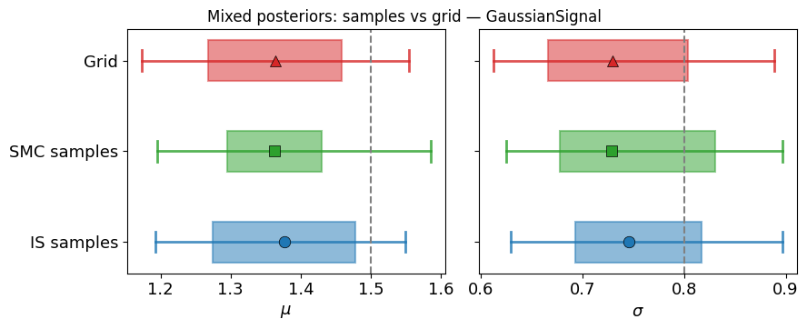
label mahalanobis z_1 z_2 score
IS samples 1.420 1.286 0.723 NaN
Grid 1.517 1.282 0.813 0.9613
SMC samples 1.748 1.466 0.802 NaN
10 Derived (pseudo) parameters — add_derived
add_derived(func, label, true_value) registers a parameter computed from the original samples. After that it appears everywhere: contour plots, triangle plots, and metric methods.
A cosmology-style example: \(S_8 = \sigma_8 \sqrt{\Omega_m / 0.3}\). Here we use the two GaussianSignal parameters \((\mu, \sigma)\) and define a pseudo-parameter \(P = \mu \cdot \sqrt{|\sigma|}\) to mimic the idea.
[27]:
from psiphy.plotting.diagnostics import SampledDistribution
# Re-use the IS samples from Section 1
# true_values = [mu_true, sigma_true] = theta
dist_derived = SampledDistribution(
s_is,
weights=w_is,
true_values=theta_true_gs,
labels=[r'\mu', r'\sigma'],
)
# Register a derived parameter: P = mu * sqrt(|sigma|)
true_P = float(theta_true_gs[0] * theta_true_gs[1] ** 0.5)
dist_derived.add_derived(
lambda s: s[:, 0] * np.abs(s[:, 1]) ** 0.5,
label=r'P',
true_value=true_P,
)
print('Full labels :', dist_derived._full_labels())
print('Full truths :', dist_derived._full_true_values())
full_s, full_w = dist_derived.get_full_samples()
print('Sample shape :', full_s.shape) # (N, 3) — 2 original + 1 derived
Full labels : ['\\mu', '\\sigma', 'P']
Full truths : [np.float64(1.5), np.float64(0.8), 1.3416407864998738]
Sample shape : (8000, 3)
10a Credible intervals on the derived parameter
[28]:
cis = dist_derived.credible_intervals() # original params only
cis_full = []
# credible_intervals() operates on get_samples(); for derived params, use
# the full sample column directly via plot_contour_1d or a manual CI:
from psiphy.plotting.diagnostics import SampledDistribution as SD
# Wrap derived column as its own 1-D posterior to get CI numbers:
derived_col = full_s[:, 2]
dist_P = SD(derived_col, weights=full_w, true_values=[true_P], labels=[r'P'])
ci_P = dist_P.credible_intervals()[0]
print(f'P median={ci_P["median"]:.4f}'
f' 68% [{ci_P["lo68"]:.4f}, {ci_P["hi68"]:.4f}]'
f' true={true_P:.4f}')
P median=1.1854 68% [1.0883, 1.2987] true=1.3416
11 Single-panel contour plots
plot_contour_1d(param) and plot_contour_2d(param1, param2) draw individual marginal panels using a KDE.
paramcan be an integer index or a label string (including derived parameters).Both methods accept an
ax=argument for embedding into existing figures.PosteriorComparisonprovides the same two methods to overlay all registered posteriors on a shared axes.
[29]:
# ── 11a 1-D marginal of an original parameter ────────────────────────────
fig = dist_derived.plot_contour_1d(param=0) # mu
plt.title(r'1-D marginal: $\mu$')
plt.show()
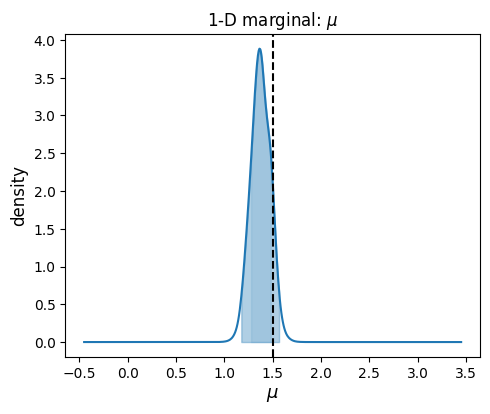
[30]:
# ── 11b 1-D marginal of the derived parameter ────────────────────────────
fig = dist_derived.plot_contour_1d(param=r'P')
plt.title(r'1-D marginal: derived $P = \mu\,|\sigma|^{1/2}$')
plt.show()
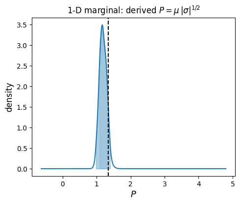
[31]:
# ── 11c 2-D joint contour (original params) ──────────────────────────────
fig = dist_derived.plot_contour_2d(param1=0, param2=1)
plt.title(r'Joint: $\mu$ vs $\sigma$')
plt.show()
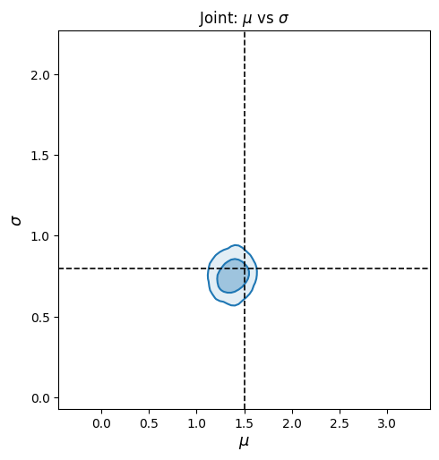
[32]:
# ── 11d 2-D joint contour (original vs derived) ─────────────────────────
fig = dist_derived.plot_contour_2d(param1=0, param2=r'P')
plt.title(r'Joint: $\mu$ vs derived $P$')
plt.show()
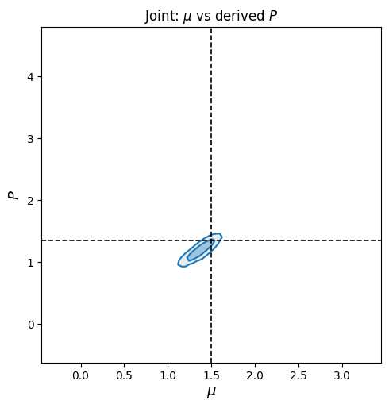
11e Embedding into a multi-panel figure
[33]:
fig, axes = plt.subplots(1, 2, figsize=(10, 4))
dist_derived.plot_contour_1d(param=0, ax=axes[0], color='C0')
axes[0].set_title(r'$\mu$ marginal')
dist_derived.plot_contour_1d(param=r'P', ax=axes[1], color='C1')
axes[1].set_title(r'Derived $P$ marginal')
fig.tight_layout()
plt.show()
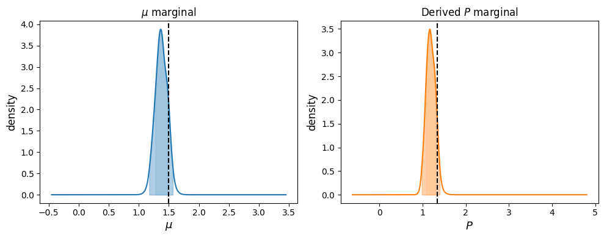
11f PosteriorComparison overlay
[34]:
# Build a comparison: IS vs SMC, both with the derived parameter
dist_smc_d = SampledDistribution(
s_smc, weights=w_smc, true_values=theta_true_gs, labels=[r'\mu', r'\sigma'],
)
dist_smc_d.add_derived(
lambda s: s[:, 0] * np.abs(s[:, 1]) ** 0.5,
label=r'P', true_value=true_P,
)
from psiphy.plotting.diagnostics import PosteriorComparison
comp_d = PosteriorComparison()
comp_d.add(dist_derived, label='IS', color='C0')
comp_d.add(dist_smc_d, label='SMC', color='C2')
# 1-D overlay
fig = comp_d.plot_contour_1d(param=r'P', fill=True, alpha=0.2)
plt.title(r'Overlay: derived $P$ — IS vs SMC')
plt.show()
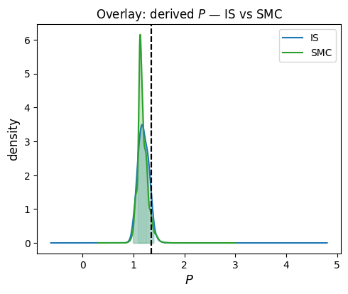
[35]:
# 2-D overlay (filled=False keeps colours readable)
fig = comp_d.plot_contour_2d(param1=0, param2=r'P', filled=False)
plt.title(r'Overlay: $\mu$ vs $P$ — IS vs SMC')
plt.show()
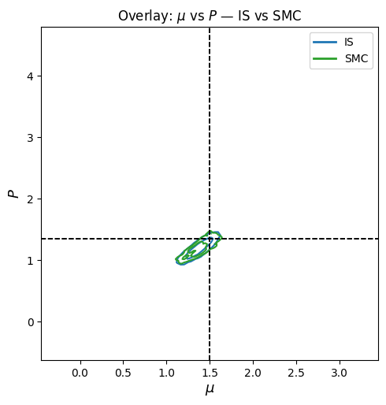
Summary
What |
How |
|---|---|
Wrap IS/MCMC samples |
|
Wrap a grid posterior |
|
Metrics |
|
Per-parameter CIs |
|
Print summary |
|
Triangle plot |
|
Compare posteriors |
|
Posterior mass in truth cube |
|
Styling controls for PosteriorComparison.add()
Argument |
Default |
Effect |
|---|---|---|
|
|
Bar / box / line colour |
|
|
|
|
|
Per-entry override |
|
|
Per-entry override |
Single-panel KDE |
|
|
Overlay contours |
|
|
Derived parameters |
|